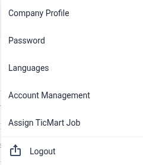

Getting Started — Home, Settings and Company Profile
Find your way around QMAS: the Home page, the top bar and your company settings.
Screenshot slots: 3 reviewed replacement images.
Overview
- Home shows quick workflows, items that need your attention, and an overview of your business.
- The left menu opens each module.
- The top bar has analytics, messages, notifications, the account avatar, help and credits.
- Settings opens from the avatar (account control) in the top bar. The menu includes Company Profile, Password, Languages, Account Management, Assign TicMart Job and Logout.
Step-by-step
1. Home
TicMate says “I’m TicMate. What would you like to do today?” and lists these workflow shortcuts:
- Generate product risk assessment report (AI Assessment workflow).
- Generate export market requirements (AI Insight workflow).
- CPSC eFiling. If it shows “API Setup Required”, set up your Certifier ID in Company Profile first.
- Request product testing with your lab partner (Product Testing).
- Request technical files from your supplier/factory (Document Review).
Attention counts the items that need action in each module, such as Product Testing, Document Review, QC Inspection, IQC Inspection, Factory Audit, Pending Review Doc and Expired Doc. Click a card to see them.
Business Overview shows your active products, suppliers, factories and partners. Click › to open the list.
Ask TicMate on the right edge opens the TicMate assistant.

2. Settings menu
Click your avatar (account control) in the top bar:
| Option | What it does |
|---|---|
| Company Profile | Company details, certificates, documents, product categories and CPSC eFiling Certifier ID. |
| Password | Change your password. |
| Languages | Change the system language. |
| Account Management | Manage your company's user accounts. |
| Assign TicMart Job | Assign jobs from the TicMart marketplace. |
| Logout | Signs you out of QMAS. |

3. Company Profile
Click the pencil icon next to the company name to edit it. The Overview, Certificate and Document tabs hold your company information. CPSC eFiling - Certifier ID is where you add and manage the API key for eFiling. Product Category lists the categories your company works with.

Tips
FAQ
- How do I change the language?
- Click your avatar (account control) in the top bar, then Languages.
- How do I change my password?
- Click your avatar (account control) in the top bar, then Password.
- Where do I edit my company information?
- Click your avatar (account control), then Company Profile (https://qmas.icw.io/company-profile).